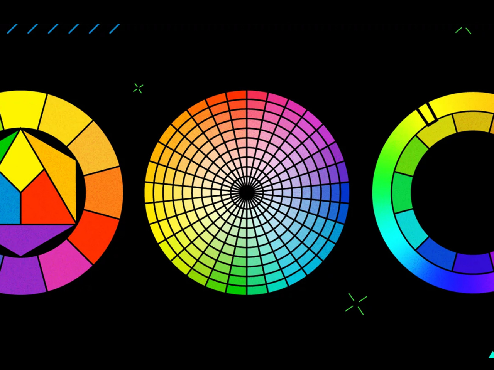

Рассказываем о комплементарных цветах, триадах, тетрадах и о том, как их использовать в дизайне.

Иоханнес Иттен — швейцарский художник и преподаватель Баухауса,
известный
своим вкладом в изучение колористики в начале XX века. В книге
«Искусство
цвета» Иттен подробно описал принципы работы с цветом и свой цветовой круг.
Круг Иттена — схема из 12 цветов. Сейчас это самый популярный инструмент графических дизайнеров и
художников. Опираясь на цветовой круг, можно выбрать палитру для интерфейса сайта, фирменного стиля
или иллюстрации.
Let's look at what an Itten circle consists of and what artists and designers need it for.
Как устроен круг Иттена
Первичные цвета —синий, жёлтый и красный. Они находятся в центре круга и считаются основными. Если их смешать, можно получить любые оттенки, доступные человеческому глазу.
Вторичные цвета — зелёный, оранжевый и фиолетовый. Получаются при смешении первичных цветов. Например, сочетание жёлтого и красного даёт оранжевый цвет, а синего и красного — фиолетовый.
Третичные цвета.Получаются при смешивании первичного и вторичного цвета, которые соседствуют на схеме. Например, жёлтый и зелёный дают жёлто-зелёный, жёлтый и оранжевый — жёлто-оранжевый.